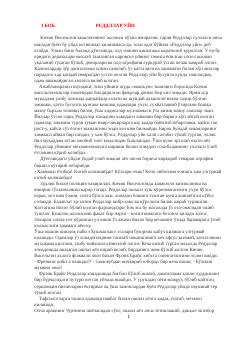

GPGarri Potter sehrgarlar maktabidagi xavfli turnirda ishtirok etadi.
Garri Potter sarguzashtlarining to'rtinchi qismida bosh qahramon sehrgarlar maktabida o'qishini davom ettiradi va xavfli 'Uch sehrgar turniri'da ishtirok etadi. Voqealar rivoji qorong'u kuchlarning qaytishi va Garri duch keladigan yangi sinovlar atrofida qurilgan.